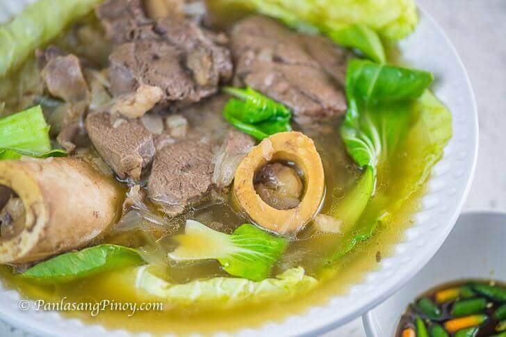

Home
Bulalo

Description
Batangas Bulalo is probably the most basic and simplest version of bulalo. If you are not familiar with this dish, it is a type of Filipino beef shank soup in clear broth. Vegetables such as cabbage and bok choy are also added to the dish, while there are versions that even use sweet corn.
Ingredients
- 3 to 4 lbs. beef shank with extra bones
- 4 pieces medium red onions sliced
- 1 tablespoon whole peppercorn
- 1 ½ tablespoons rock salt or coarse sea salt
- 4 to 5 tablespoons fish sauce
- 8 to 10 cups water
- 1 small cabbage
- 3 bunches of baby bok choy
Dipping Sauce
- 5 to 7 pieces chili peppers
- 4 tablespoons fish sauce
- 1 piece lemon or 3 pieces calamansi
Steps
- Boil water in a cooking pot.
- Add the beef shank and bones. Cover and then continue to boil in low to medium heat for 1 hour.
- Scoop away the floating scums and oil from the water. Add the onion, whole peppercorn, salt, and fish sauce. Cover and continue to boil for 3 hours.
- Arrange the cabbage and bok choy leaves on a large serving bowl. Put the bones and meat over the vegetables. Scoop the hot soup over the meat.
- Serve with a dipping sauce composed of chili peppers, fish sauce, and lemon or calamansi.
- Share and enjoy!
Notice
Contents of this page was taken from Panlasang Pinoy. Contents are only used for web creation practice exercises and I do not claim that any of their contents are mine.